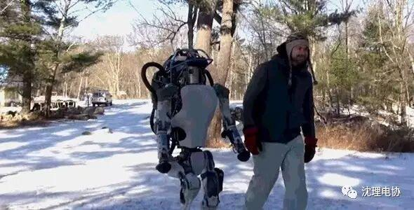
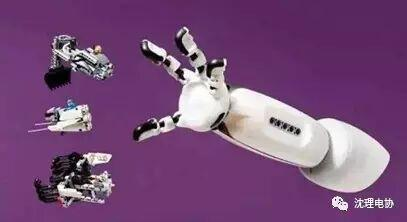
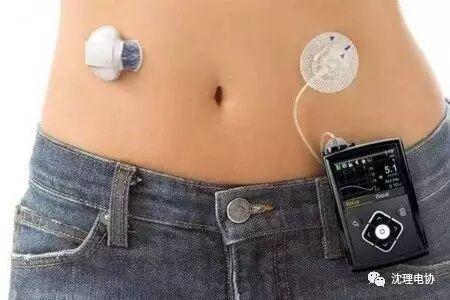
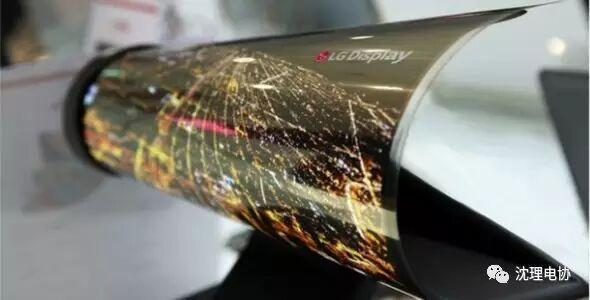

2016黑科技大盘点

2016黑科技大盘点

沈阳理工大学
电子技术与应用协会
在
前几期的推送中我们盘点了今年的十大科技发明，今天，小编再跟大家聊聊2016年的几大黑科技吧！
AlphaGo人工智能
想必今年三月份的人机大战一定有很多人关注，阿尔法围棋（AlphaGo）是一款围棋人工智能程序，由谷歌（Google）旗下DeepMind公司的戴维·西尔弗、艾佳·黄和戴密斯·哈萨比斯与他们的团队开发，这个程序利用“价值网络”去计算局面，用“策略网络”去选择下子。在2015年10月阿尔法围棋曾以5:0完胜欧洲围棋冠军、职业二段选手樊麾；今年3月再度出马，对战世界围棋冠军、职业九段选手李世石，并以4:1的总比分获胜。
Atlas机器人

Atlas机器人由美国波士顿动力公司为主开发，和由美国国防部国防高等研究计划署（DARPA）的资助和监督，专为各种搜索及拯救任务而设计，Atlas是世界上最精密的机器人之一，它由MIT计算机科学与人工智能实验室Atlas设计团队设计，负责人罗斯·泰得瑞克(Russ.Tedrake)说，“它的操纵系统比战斗机还要复杂”。
借助于四肢和身躯的传感器维持身体平衡，再加上头部的激光雷达和立体视觉传感器帮助导航和避障，Atlas已经能够适应户外和室内的环境。它不仅被设计能够行走、取物，并且能够在户外穿越严酷地形，使用手脚攀爬。在人工智能的帮助下，Atlas能够第一时间作出反应：爬起来、捡起来等动作。
小编相信，当这款机器人真正投入灾后救助工作时，一定会减少很多救援人员的伤亡的！

多功能假肢 IKO

大多数假肢的功能是为了满足残疾人的功能需求，但由Carlos Arturo Torres研发制造的假肢IKO能够满足孩子们的乐趣，儿童戴上它后不但能找回自己的手，还能随时为其换装模块来娱乐，与乐高产品兼容。但更重要的是。Torres希望通过IKO让人们消除对残疾人的歧视。
IKO的普及不但可以让不幸的孩子找回自己的手，更可以消除残疾孩子们的自卑心理，还孩子们一个幸福的人生！
人工胰腺 Minimed 670G

为了保持健康，糖尿病患者必须不断地检查他们的血糖，美敦力公司的目标是通过其MiniMed 670G，也就是“人工胰腺”，使这个过程可以更加简便。
近日，美敦力开发的“人工胰腺”获得了美国FDA批准上市，该设备只有 iPod 大小，用户只要将其连接到他们的身体上，设备就会每五分钟测量一次他们的血糖水平，使患者更方便地增加或减少胰岛素剂量。
虽然目前病人仍需要餐后额外注射胰岛素，但Medtronic公司正逐渐向全自动血糖仪的方向迈进。这种血糖仪将于明年上市，有望大幅改善1型糖尿病人生活质量。



LG可弯曲屏幕

LG可弯曲屏幕
LG研发了一款迄今为止最大的可弯曲屏幕：18英寸的OLED面板拥有极强的柔韧度，使其可以卷成直径1英寸的筒。屏幕原型的背面采用了一种新的聚酰胺膜，而不是通用的塑料，这让它更为纤薄和灵活。它同时拥有 1,200 x 810的分辨率，这足以满足我们对可弯曲平板电脑的基本期望。

这款屏幕在能力弯折能力上也很出色，曲率半径达到30R，将其卷成半径3cm的状态，也不会影响面板的显示功能。
OLED被广泛认为可取代LCD，成为智能手机未来的标准配置。据了解，OLED柔性显示屏是指一种曲面或可折叠的显示屏，最大特点是会主动发光，并在可视角度、色域、响应时间，卓越黑色等多方面都比液晶面板出色，且相比传统LCD、LED屏幕具备更自然的色彩、色彩层次与对比度表现更加明显。